programming
quality: reproducibility, calculations
efficiency gains: scaling
output flexibility: PDF, Word, HTML
interactive creation (e.g. Excel, Tableau)
development time
changing requirements
maintenance and transparency
Bo Werth
Statistician STI/EAS
programming
quality: reproducibility, calculations
efficiency gains: scaling
output flexibility: PDF, Word, HTML
interactive creation (e.g. Excel, Tableau)
development time
changing requirements
maintenance and transparency
R Graphics Systemsgoogle trends: python, r, ggplot
traditional graphics
grid graphics system
trellis, lattice, ggplotR graphics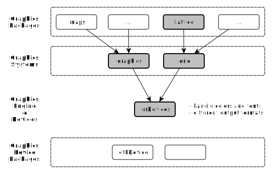
ggplotggvis: ggplot for dynamic charts based on vega.jsrCharts: interface to high-level js libraries building e.g. on d3.js
highcharts, polyplot, nvd3, ricksaw for statistical chartscrosslet, datamaps, leaflet etc. for map visualisationsexample(plot)Single plot regions

Multiple plot regions
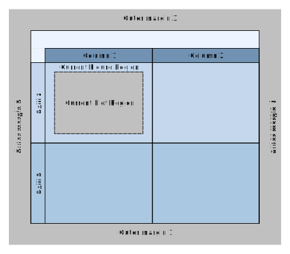
op <- par(mfrow = c(2, 2),
mar = c(3, 0, 0, 0))
plot(...); plot(...); plot(...); plot(...)
## At end of plotting, reset to previous settings:
par(op)
?par()par() has a persistent effectop <- par(mfrow = c(2, 2),
mar = c(3, 0, 0, 0))
plot(...); plot(...); plot(...); plot(...)
## At end of plotting, reset to previous settings:
par(op)
mfrow and mfcol control the number of figure regions on a page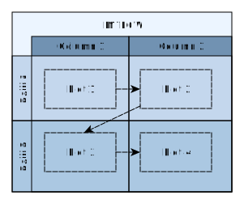


plt: location of the plot region (l, r, b, t)pin: size of the plot region, (width, height)pty: m: use all available space, s: preserve square formatcolours()[1:4] # 657 color names
## [1] "white" "aliceblue" "antiquewhite" "antiquewhite1"
col2rgb("transparent") # see the RGB values for a particular color name
## [,1]
## red 255
## green 255
## blue 255
rgb(1, 0, 0) # Red-Green-Blue triplet of intensities, format #RRGGBB, FF = 255
## [1] "#FF0000"
pch point symbols
A particular data symbol is selected by specifying an integer between 0 and 25 or a single character for the pch graphical setting. In the diagram, the relevant integer or character pch value is shown in grey to the left of the relevant symbol.
Source: http://vis.supstat.com/2013/04/plotting-symbols-and-color-palettes/
example(barplot)
example(boxplot)
example(pairs)
example(persp)
example(stars)example(mosaicplot)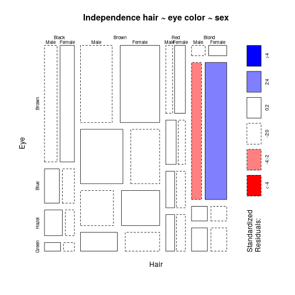
example(coplot)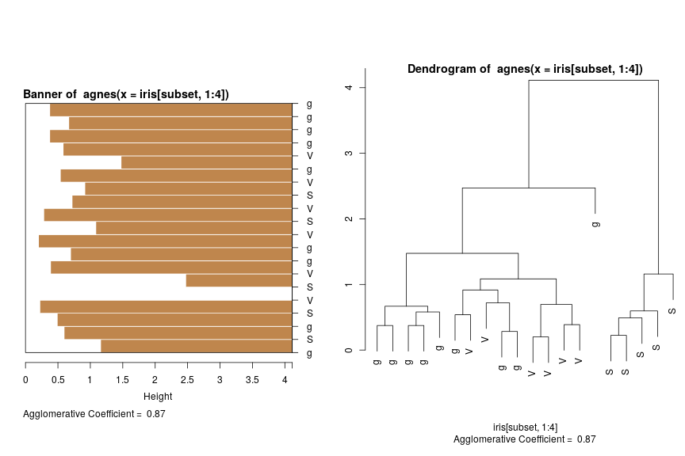
plot(hclust(d = dist(USArrests), method = "average"), main=title)

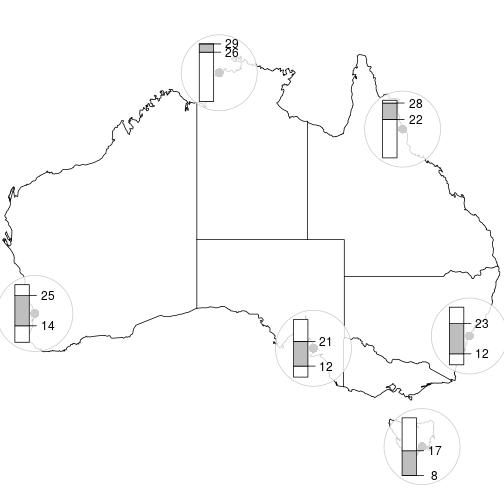
plot() function to draw the dendrogramA statistical graphic is a mapping from data to
and optionally entails
ggplot2 attempts to produce any kind of statistical graphic using
grid package to exercise low-level control over the appearance of the plotWickham, H. (2009). ggplot2. doi:10.1007/978-0-387-98141-3
plot() and qplot()plot(x, y)
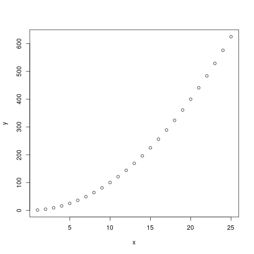
qplot(x, y)
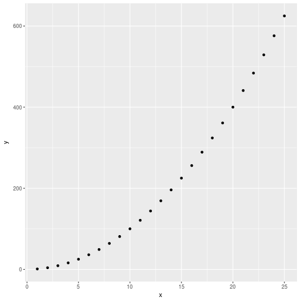
plot() and qplot()plot(x, y, type = "l")

qplot(x, y, geom = "line")
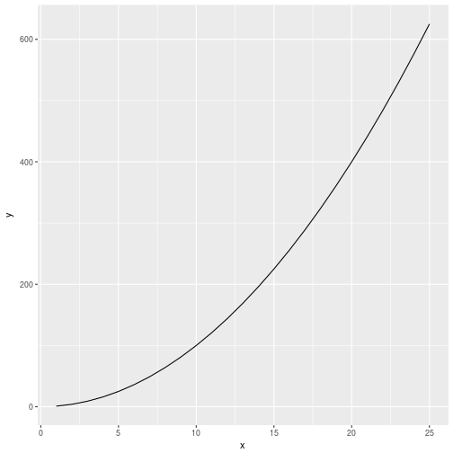
plot() and qplot()plot(x, y, type = "s")
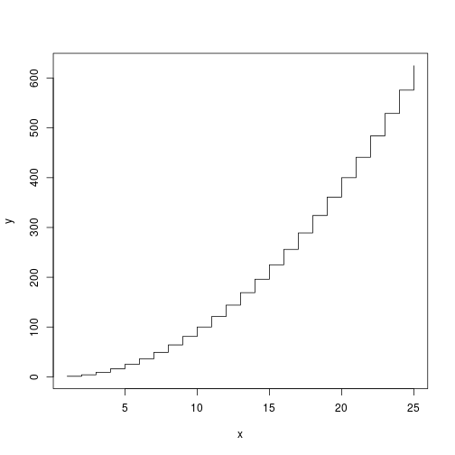
qplot(x, y, geom = "step")
plot() and qplot()plot(x, y, type = "b")
qplot(x, y, geom = c("point", "line"))
mtcars datasetData from the 1974 Motor Trend US magazine for 32 automobiles (1973-74 models). The variables are the following:
mpg Miles/(US) galloncyl Number of cylindersdisp Displacement (cu.in.)hp Gross horsepowerdrat Rear axle ratiowt Weight (lb/1000)qsec 1/4 mile timevs V/Sam Transmission (0 = automatic, 1 = manual)gear Number of forward gearscarb Number of carburetorsplot() and qplot()boxplot(wt~cyl,
data=mtcars, col="lightgray")
qplot(factor(cyl), wt,
data=mtcars, geom=c("boxplot", "jitter"))
plot() and qplot()hist(mtcars$wt)
qplot(mtcars$wt, geom = "histogram",
binwidth = 0.5, color = factor(0))
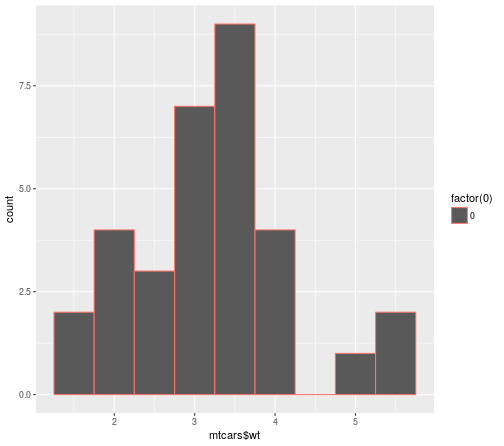
plot() and qplot()cdplot(mtcars$wt, factor(mtcars$cyl))
qplot(mtcars$wt, fill=factor(mtcars$cyl),
geom="density")
diamonds datasetA dataset containing the prices and other attributes of almost 54,000 diamonds. The variables are as follows:
price price in US dollars ($326-$18,823)carat weight of the diamond (0.2-5.01)cut quality of the cut (Fair, Good, Very Good, Premium, Ideal)colour diamond colour, from J (worst) to D (best)clarity a measurement of how clear the diamond is (I1 (worst), SI1, SI2, VS1, VS2, VVS1, VVS2, IF (best))x length in mm (0-10.74)y width in mm (0-58.9)z depth in mm (0-31.8)depth total depth percentage = z / mean(x, y) = 2 * z / (x + y) (43-79)table width of top of diamond relative to widest point (43-95)qplot(): single line of codeqplot(x=carat, y=price, colour=clarity,
data=diamonds, geom=("point"))
qplot(carat, price,
data = diamonds, geom = c("point", "smooth"))
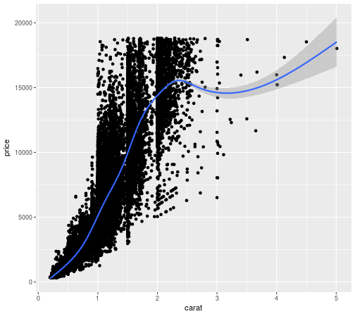
ggplot(): add layers for more control using "+"ggplot(data=diamonds) +
geom_point(aes(x=price, y=carat, colour=color)) +
facet_grid(. ~ clarity)
ggplot(): add layers for more control using "+"ggplot(data = df,aes(x = x,y = y)) + # source: https://plot.ly/ggplot2/geom_errorbar/
geom_errorbar(aes(ymin = ymin,ymax = ymax), colour = 'steelblue', width = 0.2) +
geom_errorbarh(aes(xmin = xmin,xmax = xmax), colour = 'steelblue', height = 0.4) +
geom_point(color = "black", size = 3)
theme_stata()
theme_economist()
theme_fivethirtyeight()
Tableau theme_igray()
ggthemrpal.crN <- c('#95B3D7','#F79646','#8064A2','#4BACC6','#9BBB59','#C0504D')
ugly <- define_palette(
swatch = pal.crN, gradient = c(lower = pal.crN[1L], upper = pal.crN[2L]))
ggthemr(ugly)
ggplot(dsamp, aes(x=price, fill=cut)) + geom_bar(binwidth = 500)

ggthemr_reset()

gridSVG animates a ggplot object before the output is flattened for export
to a graphics devicesize = populationcolor = continent
blue: Europered: Asiagreen: Africayellow: America
/demo/dynamic.r

p2 <- nPlot(uempmed ~ date, data = economics, type = 'sparklinePlus')
p2$chart(xTickFormat="#!function(d) {return d3.time.format('%b %Y')(new Date( d * 86400000 ));}!#")
p2$print('chart2')
p3 <- hPlot(Pulse ~ Height, data = MASS::survey, type = "bubble", title = "Zoom demo",
subtitle = "bubble chart", size = "Age", group = "Exer")
p3$chart(zoomType = "xy"); p3$exporting(enabled = T); p3$print('chart3')
knitrrmarkdown syntaxggplot
knitrknitr# A Minimal Example for Markdown
This is a minimal example of using **knitr** to produce an _HTML_ page from _Markdown_.
## R code chunks
Now we write some code chunks in this markdown file:
'''{r computing}
x <- 1+1 # a simple calculator
set.seed(123)
rnorm(5) # boring random numbers
'''
We can also produce plots:
'''{r graphics}
par(mar = c(4, 4, .1, .1))
with(mtcars, {
plot(mpg~hp, pch=20, col='darkgray')
lines(lowess(hp, mpg))
})
'''
brew: generate input files for knitr
apply function to country vector
create.report <- function(x, prepend = "report_icio_tiva_") {
Rmd.file <- file.path(path.Rmd, paste0(prepend, x, ".Rmd"))
rmd.file <- file.path(path.rmd, paste0(prepend, x, ".rmd")) # .md doesn't convert hash tags
brew(file = file.path(path, "report_icio_tiva.brew"), output = Rmd.file)
knit(input = Rmd.file, output = rmd.file)
out.file <- paste0(prepend, x, ".rmd")
return(out.file)
}
coulist <- c("AUT", "DEU", "ESP", "IRL", "USA")
results <- sapply(as.character(coulist), create.report)
brew template example'''{r preamble, echo = FALSE}
cou <<- '<%= x %>'
country <- as.character(namereg$country[match(cou, namereg$cou)])
natnlty <- as.character(namereg$coupron[match(cou, namereg$cou)])
customtext <- cntext[,colnames(cntext)==cou]
'''
# Trade in Value-added: 'r country'
## EXGRDVA\_EX {#exgrdvaex}
### Domestic value added content of gross exports, 'r year', %
'''{r fig1, fig.path="figures/report_icio_tiva/<%= x %>/", fig.height=5, fig.width=10,
echo=FALSE, message=FALSE}
source(file.path(path, "code", "figure1.R"))
'''
'r country' domestic value-added content of its exports is, at 'r .perc1'%, 'r .rel1'
the OECD average in 'r year'.
'r if(!is.na(customtext[1])) customtext[1]'
ReporteRs: create MS doc and ppt with editable graphics and formatted tables

rapporter / pander: ruby on rails online platform for report generation

jekyll: ruby on rails framework to generate static homepages from rmd files (i.e. evaluate R code with knitr, see http://10.101.26.220, http://r-pkgs.had.co.nz/ or http://adv-r.had.co.nz)